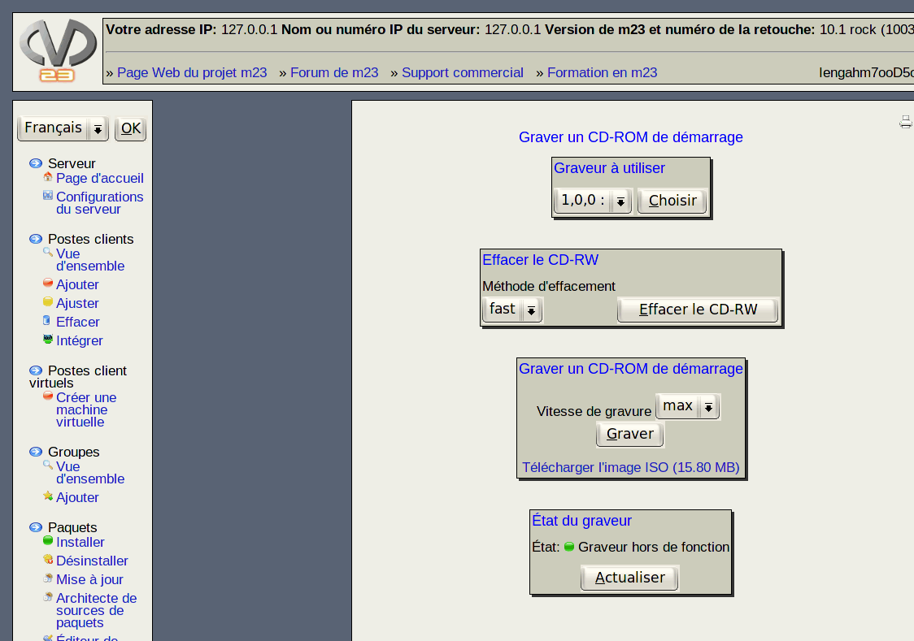

Vous pouvez constituer un CD de démarrage pour un poste client avec un graveur de CD raccordé sur le serveur.

- Choisissez tout d'abord le graveur parmis ceux à votre disposition, puis, cliquez sur Choisir.
- Si vous désirez utiliser un CD réinscriptible, vous devez l'effacer préalablement. Ceci est possible avec l'option Effacer le CD-RW. Vous avez le choix si seulement une petite partie du CD-RW (ce qui suffit dans la plupart de cas) ou le CD-RW complet doit être effacé. Pour l'effacement rapide, choisissez fast, pour l'effacement complet all.
- Enfin, vous avez la possibilité de graver l'image ISO de démarrage du poste client. Cliquez simplement sur Graver dans le champ Graver un CD-ROM d'amorçage après avoir choisi la vitesse de la gravure.
Dans le champ État du graveur s'afficheront les informations sur le processus d'effacement ou de gravure précédent et sur l'état actuel du graveur.
Sous-sections
dodger
2014-08-06